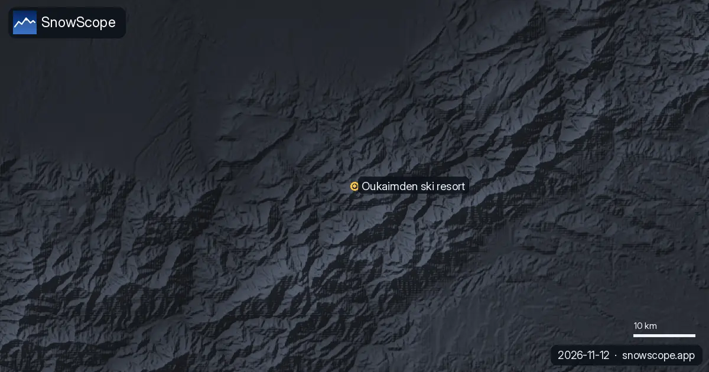

30 km² de superficie nevada: el parte de nieve del Atlas (10 de noviembre)
8 cm: es la nieve máxima que encuentra hoy nuestro modelo en el Atlas. Las estaciones de esquí del Atlas no tienen nieve en sus pistas hoy. Nuestro modelo solo encuentra nieve en las cumbres más altas: unos 30 km² de superficie nevada, como máximo 8 cm.
Consulta la previsión de nieve en tiempo real de Habri en la app SnowScopeEspesor de nieve, alertas de nieve polvo y mapa 3D, gratis.La nieve que hay hoy
Habri: sin nieve en las pistas. Michlifen: sin nieve en las pistas. Oukaïmeden: sin nieve en las pistas.
La superficie nevada pasó de 70 km² el 8 de noviembre a 30 km² hoy, y nuestra previsión da 10 km² el 13 de noviembre.
| Estación | Espesor de nieve | Nieve nueva, 72 h | Previsto, próximos días | Cota máx. |
|---|---|---|---|---|
| Habri | 0 cm | 0 cm | 0 cm | 2108 m |
| Michlifen | 0 cm | 0 cm | 0 cm | 2070 m |
| Oukaïmeden | 0 cm | 0 cm | 0 cm | 3258 m |

Previsión
Nuestra previsión no muestra nieve nueva destacable en las estaciones hasta el 13 de noviembre.
Con la próxima borrasca, el lugar a vigilar es Oukaïmeden: sus remontes llegan a 3258 m, mucho más alto que Habri (2108 m) y Michlifen (2070 m), que necesitan borrascas más frías para blanquearse.
Las previsiones a varios días pueden cambiar: vuelve a mirar el mapa el día antes de viajar.
Cómo va este invierno
¿Es raro? En los últimos 46 inviernos, el espesor habitual en esta fecha a 1970 m cerca de Michlifen era de 0 cm, así que un comienzo de invierno sin nieve es normal en el Atlas.
Consejos para esquiadores
- Nieve en el mapa no significa que la estación esté abierta: consulta remontes y fechas de apertura en su web.
- La nieve de principio de temporada es fina. Quédate en pistas abiertas y pisadas: piedras y hierba están justo debajo.
- Las previsiones a varios días pueden cambiar: vuelve a mirar el mapa el día antes de viajar.
- Activa una alerta de nieve polvo en la app SnowScope para saber cuándo Habri recibe nieve nueva.
Sobre estas cifras
Los espesores de nieve de las estaciones son la nieve más profunda en las pistas altas según el modelo de nieve de SnowScope (unos 1 km, cálculo del 10 de noviembre); son estimaciones para una zona, no una medida en un punto. Los valores de las estaciones de medida son medidas en la fecha indicada. Las previsiones pueden cambiar. Consulta siempre el boletín oficial de aludes antes de salir fuera de pista.
Citar este informe
Para investigación, docencia o prensa: cifras y gráficos reutilizables libremente bajo CC BY 4.0 con esta cita.
SnowScope (2026), 30 km² de superficie nevada: el parte de nieve del Atlas (10 de noviembre), https://snowscope.app/blog/es/2026/11/atlas-morocco-atlas-snow-check-10-november-2026.html, consultado el 2026-11-10
SnowScope (Atlas Labs). (2026, November 10). 30 km² de superficie nevada: el parte de nieve del Atlas (10 de noviembre). SnowScope snow reports. https://snowscope.app/blog/es/2026/11/atlas-morocco-atlas-snow-check-10-november-2026.html
BibTeX
@misc{snowscope2026atlasmoroccoatlassnowche,
author = {{SnowScope (Atlas Labs)}},
title = {30 km² de superficie nevada: el parte de nieve del Atlas (10 de noviembre)},
year = {2026},
month = nov,
howpublished = {\url{https://snowscope.app/blog/es/2026/11/atlas-morocco-atlas-snow-check-10-november-2026.html}},
note = {Published 2026-11-10 12:24 UTC; accessed 2026-11-10}
}· CC BY 4.0 · Métodos, datos y herramientas →
Habri: nieve y temperatura según la altura, este invierno vs el pasado (herramientas) →
Sigue Habri
Gratis: un aviso cuando llega la nieve y la previsión cada mañana.
Más partes de nieve

Michlifen, cerca de Ifrane, tiene nieve en episodios cortos más que una temporada. Lo que muestran 46 inviernos pasados, por qué el espesor habitual es cero y cómo estar allí los días buenos.
A la altitud de Oukaïmeden, nuestra serie de 46 inviernos muestra un 12 % menos de días de nieve; más abajo, la señal se pierde. Lo que sabemos.

Todavía sin nieve en Oukaïmeden: 0 cm en las tres alturas, nada en los últimos siete días, nada en la semana que viene. Lo que trae un noviembre habitual al Alto Atlas y cuándo apuntar al esquí.